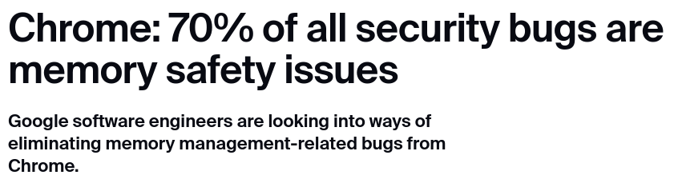
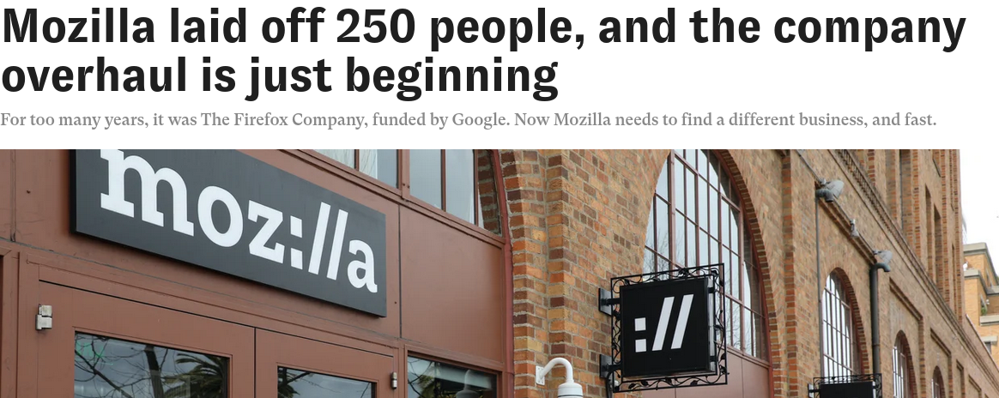
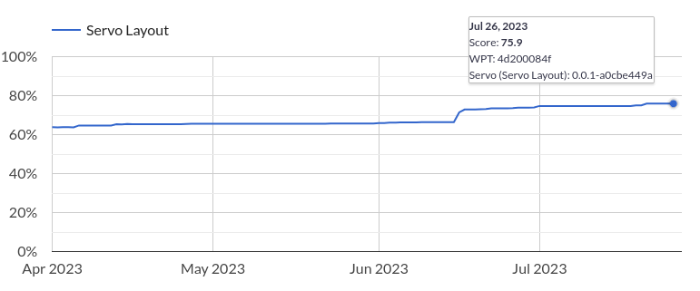

<!doctype html><html class="servo loading"><meta charset="utf-8">
<link rel="stylesheet" href="style.css">
<main>
<section class="cover">
    <center style="margin-top: calc((16em - 9em) / 2);">
        <h1>Servo in 2023</h1>
        <div>Wu Yu Wei</div>
    </center>
</section>
<section>
    <h2>What is Servo?</h2>
    <ul>
        <li>Created by Mozilla Search in 2012
        <li>Experiement and improve Firefox
        <li>Rewrite web engine in Rust
    </ul>
</section>
<section>
    <h2>What did it achieve?</h2>
    <ul style="font-size: 93%;">
        <li>Modularity: many components are individual crates
        <ul>
            <li>html5ever
            <li>cssparser
            <li>url, and more..
        </ul>
        <li>Parallelism: for style and layout
        <li>GPU rendering
        <ul>
            <li>webrender
            <li>wgpu
            <li>pathfinder
        </ul>
    </ul>
</section>
<section>
    <h2>Memory Saftey</h2>
    <div style="text-align: center;">
        
    </div>
</section>
<section>
    <h2>And...</h2>
    <div style="text-align: center;">
        
    </div>
</section>
<section>
    <h2>What now?</h2>
    <ul>
        <li>Restarted the <a href="https://github.com/servo/project/blob/master/governance/tsc/README.md">Technical Steering Committee</a>
        <li>Already more patches landed in <a href="https://github.com/servo/servo">servo/servo</a> than 2022
        <ul>
            <li>Improved builds and releases
            <li>Several big dependency updates
            <li>WPT failures and flaky tests
            <li>Reworked on Layout 2020
            <li>Working on embedding targets
        </ul>
    </ul>
</section>
<section>
    <h2>Web Platform Tests</h2>
    <ul class="inospace" style="font-size: 93%; display: inline-block; vertical-align: top;">
        <li><a href="https://wpt.fyi">wpt.fyi</a> <span style="font-family: Symbola;">→</span> <span style="font-size: 75%; position: relative; top: calc(1em / 3); vertical-align: top;">EDIT</span> <span style="font-family: Symbola;">→</span> <span style="font-size: 75%; position: relative; top: calc(1em / 3); vertical-align: top;">ADD PRODUCT</span> <span style="font-family: Symbola;">→</span> Servo <span style="font-family: Symbola;">→</span> <span style="font-size: 75%; position: relative; top: calc(1em / 3); vertical-align: top;">SUBMIT</span>
        <li>Servo <a href="https://servo.github.io/internal-wpt-dashboard/">WPT dashboard</a>
    </ul>
    <div style="text-align: center;">
        
    </div>
</section>
<section>
    <h2>Demos</h2>
    <center style="margin-top: 5em;">These slides were rendered in Servo :D</center>
</section>
<section>
    <h2>Demos</h2>
    <ul>
        <li><a href="https://demo.servo.org">Servo Experiments</a>
        <ul>
            <li><a href="https://demo.servo.org/experiments/tiles/">Mosaic Gallery</a> — parallel style
            <li><a href="https://demo.servo.org/experiments/twgl-tunnel/">TWGL Tunnel</a> — WebGL
        </ul>
    </ul>
</section>
<section>
    <h2>Contributing</h2>
    <ul>
        <li><a href="https://github.com/servo/servo/blob/master/docs/HACKING_QUICKSTART.md">HACKING_QUICKSTART.md</a>
        <li>Visit <a href="https://servo.zulipchat.com">Zulip</a> for community discussion
        <li>Make more demos for <a href="https://demo.servo.org">Servo Experiments</a>
        <li>Report bugs <a href="https://github.com/servo/servo/issues">on GitHub</a>
    </ul>
</section>
<section>
    <center style="margin-top: 5em;">
        <h2>Thanks!</h2>
    </center>
</section>
</main>
<div class="bg a"></div>
<div class="bg b"></div>
<div class="bg c"></div>
<footer>
    <div><strong>Servo in 2023</strong></div>
    <div>Wu Yu Wei</div>
</footer>
<script src="script.js"></script>
